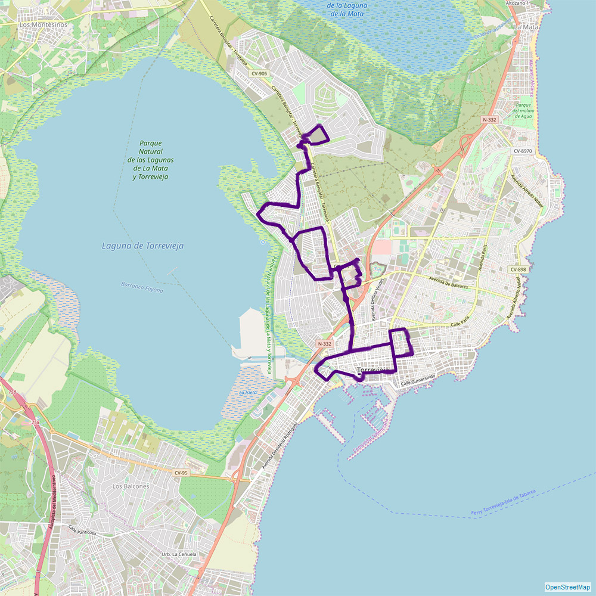

Alicante can be reached by plane from the following cities:
From Alicante airport one can take a taxi (the cost is about 50 €)
In Torrevieja and the vicinity one can move around by a rented bike (also electric). Bike rentals i.e.:
Calle los Portalicos, 7, , Av. Dr. Gregorio Marañón, 43, Real Club Nautico, Paseo Vistalegre, 2A
Amsterdam, Antwerp, Asturias, Barcelona, Bergen, Basel, Switzerland / Mulhouse, Belfast, Berlin, Bilbao, Billund, Bournemouth, Bimingham, Bremen, Bristol, Brussels, Bucharest, Cardiff, Cluj-Napoca, Cologne, Copenhagen, Cork, Doncaster, Dublin, Dusseldorf, Edinburgh, Eindhoven, Exeter, Frankfurt, Gdansk, Geneva, Glasgow, Gothenburg, Hamburg, Helsinki, Haugesund, Ibiza, Karlsruhe/Baden Baden, Kaunas, Kiev, Kraków, Leeds, Leicestershire, Liege, Lisbon, Liverpool, London, Maastricht, Madrid, Manchester, Marseille, Milan, Modlin, Moscow, Munich Newcastle, Oslo, Ostend, Palma Mallorca, Paris, Porto, Poznan, Reykjavik, Rome, Rotterdam, Sandefjord, Santiago De Compostela, Sevilla, Shannon, Southend, Stavanger, Stockholm, Stuttgart, Trondheim, Vienna, Warszawa, Wrocław and others.
Every 2 hours a bus from Alicante airport departs to the center of Torrevieja. Then a local bus takes you right next to the appartment.From Alicante airport one can take a taxi (the cost is about 50 €)
In Torrevieja and the vicinity one can move around by a rented bike (also electric). Bike rentals i.e.:
Calle los Portalicos, 7, , Av. Dr. Gregorio Marañón, 43, Real Club Nautico, Paseo Vistalegre, 2A

Route B Torrevieja – Torretas
October to May: from Monday to Friday every 35 min. (07:30 am to 10:00 pm)
October to May: from Monday to Friday every 35 min. (07:30 am to 10:00 pm)
weekends and holidays every 65 min. (07:30 am to 10:00 pm)
June to September: each day every 40 min. (07:30 am to 11:00 pm)

Route A Torrevieja – La Mata (Avda. París)
October to May: from Monday to Friday every 30 min. (07:30 am to 10:00 pm)
October to May: from Monday to Friday every 30 min. (07:30 am to 10:00 pm)
weekends and holidays every 40 min. (07:30 am to 10:00 pm)
July and August: each day every 15 min. (07:30 am to 11:00 pm)
June to September: each day every 30 min. (07:30 am to 11:00 pm)

Route C Torrevieja – Lomas
October to May: from Monday to Friday every 35 min. (07:30 am to 10:00 pm)
October to May: from Monday to Friday every 35 min. (07:30 am to 10:00 pm)
weekends and holidays every 65 min. (07:30 am to 10:00 pm)
June to September: each day every 40 min. (07:30 am to 11:00 pm)

Route D-F Torrevieja – Los Altos – Rocio del Mar
October to May: from Monday to Friday every 35 min. (07:30 am to 10:00 pm)
October to May: from Monday to Friday every 35 min. (07:30 am to 10:00 pm)
weekends and holidays every 65 min. (07:30 am to 10:00 pm)
June to September: each day every 40 min. (07:30 am to 11:00 pm)

Route E Torrevieja – Los Balcones – Lago Jardín
October to May: from Monday to Friday every 35 min. (07:30 am to 10:00 pm)
October to May: from Monday to Friday every 35 min. (07:30 am to 10:00 pm)
weekends and holidays every 75 min. (07:30 am to 10:00 pm)
June to September: each day every 35 min. (07:30 am to 11:00 pm)

Route G Torrevieja – San Luís
October to May: from Monday to Friday every 35 min. (07:30 am to 10:00 pm)